If a part of the telegram depends on a value transferred earlier in the same telegram, the multiplexer component is useful:
switch in C programming),case in C programming) is choosen.The selector denotes a Component within the same Primitive (e.g. request), this Component must be located
A positive response shall have three possible structures:
0x57 0x01 0x23 0xAA
0x57 0x45 0x67 0xBB 0xCC
0x57 0x89 0xAB 0xCC 0xDD 0xEEA Mux can describe this as follows:
0x01 gets 0x23 0xAA).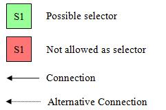
Legend for Mux / Selector Positions
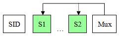
(Selector can be located everywhere before the Multiplexer.)
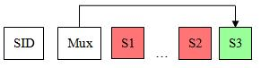
Allowed only in Positive Response.
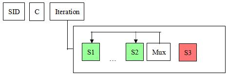
(Selector can be located everywhere before the Multiplexer.)
Within one Primitive, at most one Mux Component is allowed (CDS-8797, cf. CDS-7621)
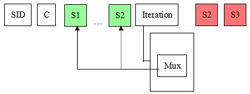
(Selector can be located everywhere before the Iteration.)
Since CANdelaStudio 5.5, there are
In 6.0, this distinction depends on the selector data type and the Mux case values actually present.
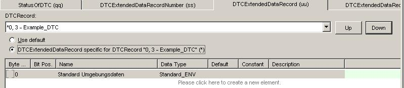
Mux with Fixed set of Values
[MUX-R200] Mux with Fixed Set of Values
In the CANdelaStudio GUI since 5.5, the combo-box contains an entry with the string “Default” and all selector values available for the selector (e.g. all DTCs).
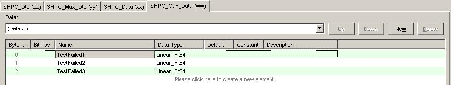
Mux "Free Style"
[MUX-R300] “Free style” Mux
In the CANdelaStudio GUI since 5.5, the combo-box contains an entry with the string “Default” and all selector values for that a Mux case exists.
Mux cases are created and deleted via the respective buttons to the right. Clicking “New” opens a dialog where the user can specify a range of possible values, e.g. 1..99.
This chapter describes the constellations of selector data types and Mux case constants.
A Multiplexer references a selector component containing a single data object. The value of this data object defines the specific case content of the multiplexer to expect at runtime. The selector data object can reference one of the following data types:
x → xraw value → Text[a,b] → Textx → f(x) = m*x+oPiecewise linear (set of linear computations defined for specific intervals):
[a_1, b_1] → f1(x) = m1*x+o1
[a_2, b_2] → f2(x) = m2*x+o2 …Characteristic Curve (non-interpolated): raw value → numeric value
x_1 → y_1
x_2 → y_2
x_3 → y_3Characteristic Curve (interpolated): linear interpolation between table entries (x_i, y_i).
Range exclusions defined at the selector data type have no impact on the Mux cases. The runtime system shall not treat values within a range exclusion with an “exception”, but regularly compute a physical value for such a coded value.
Mux cases are defined for ranges of the selector value domain. Consider the situation depicted below of a scattered selector value domain of two intervals and a range exclusion in the first interval:
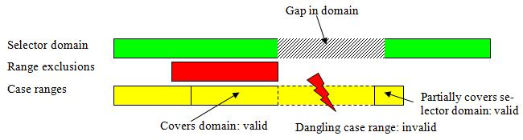
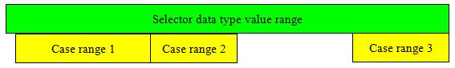
The identity data type spans the full range of selector values, only limited by its byte size. A Mux using an identity data type is a free style Mux, see above.
A text table data type maps either one coded value (discrete text table) or a coded value range (non-discrete text table) to a text label. If used as a selector, two situations are possible:
Text table Mux with fixed set of values
If each Mux range [ri1, r i2] “completely covers” textual mappings [ti1, t i2] such that
ri1==t i1 (the Mux range start equals the start of a textual mapping), and
r i2==t j2 (the Mux range end equals the end of a textual mapping, the same or a different textual mapping),
the Mux is handled (e.g. visualized in GUI) as Mux with fixed set of values, i.e.
the text table ranges;
additionally, a default entry for each text table range [ti1, t i2] which is not covered by any Mux case.
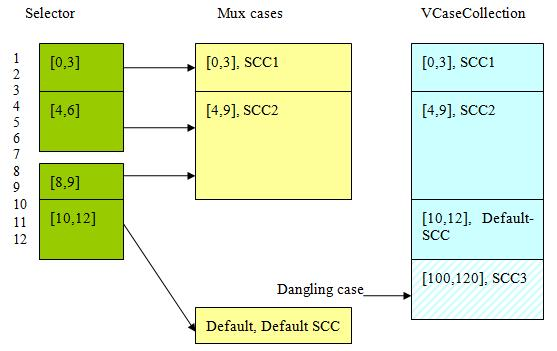
Undefined gaps in the selector domain of a mux range are accepted. In the example above, value 7 is not part of the selector domain, but included in the mux case [4,9]. In this situation, the Mux case definition “[4, 9], SCC2” is stronger than the Selector datatype definition: value 7 actually maps to SCC2. In the CANdela data model, it is not possible to map the separate intervals [4,6] and [8,9] (without the value 7) to the same SCC2.
The Mux is still treated as Mux with fixed set of values, since the mux range boundaries match the boundaries of the selector interval. Even a Mux case range [100, 120] would not make the Mux a free-style Mux (see below), because the case [100, 120] would be dangling and therefore would be discarded.
Text Table Free Style Mux
If any Mux range [ri1, r i2] does not “completely cover” the textual mappings, i.e. ri1 is not the start of a textual mapping, or ri2 is not the end of a textual mapping, the Mux is handled as free style Mux, as triggered by the case range end “4” in the following example:
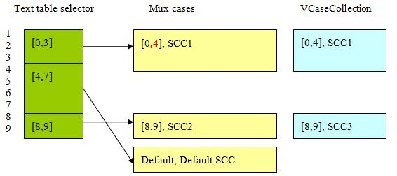
Even a Mux using a discrete text table may be handled as free-style Mux, e.g. for the text table
0 : red
10: greenthe Mux range [0, 5] makes the Mux a free-style Mux.
A Mux using a linear computation selector data type is a free-style Mux, handled in the same way as a Mux using an identity data type.
Since the CANdela data model uses coded values to specify a Mux case, the linear conversion to the physical value is not relevant here.
A Mux using a piecewise linear selector data type is a Mux with fixed set of values or a free-style Mux, depending on the coded value ranges and the Mux case ranges (analogous to text table).
The linear conversion to the physical value is not relevant here.
A Mux using a characteristic curve selector data type is a Mux with fixed set of values or a free-style Mux, depending on the coded value ranges and the Mux case ranges (analogous to text table).
A Mux using this data type is a free-style Mux the same way as for an identity data type.
A Mux using a formula data type is not handled (cf. CDS-12075).
A Mux using a Procedure data type is not handled (cf. CDS-12075).
A DTC Mux is always handled as a fixed set of values.
Even though a DTC mux is similar to a (discrete) text table selector based mux which can switch to free-style mode through non matching case boundaries, a DTC mux never switches to this mode.
DTC muxes are the most frequent use case of multiplexers and shall have a minimum of complexity for the user. Thus free-style mode is avoided here.
[PC-R050-sdMux] At most one of (sd proxy component, Multiplexer component) can be used in a Primitive.